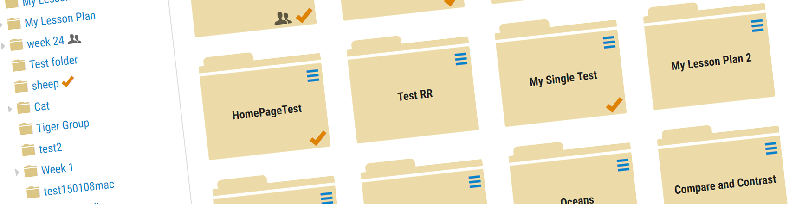
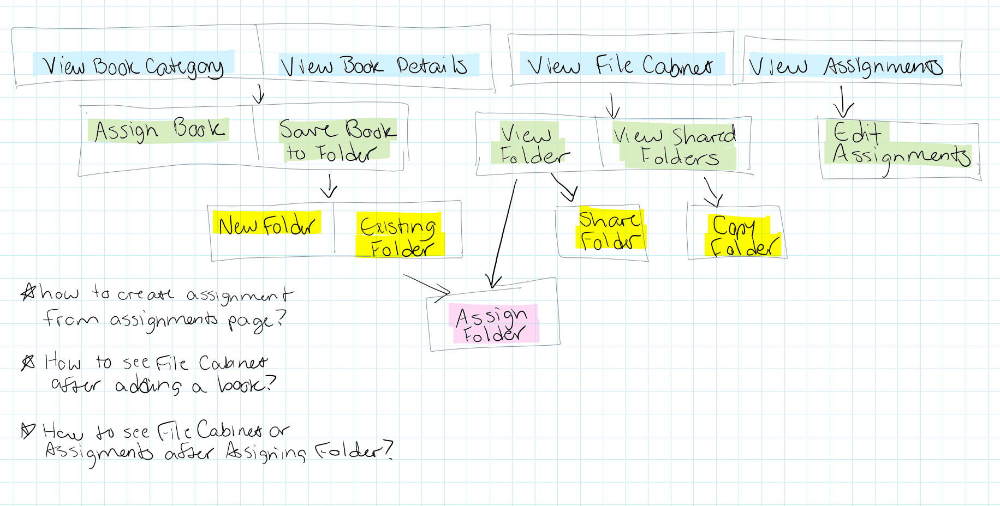
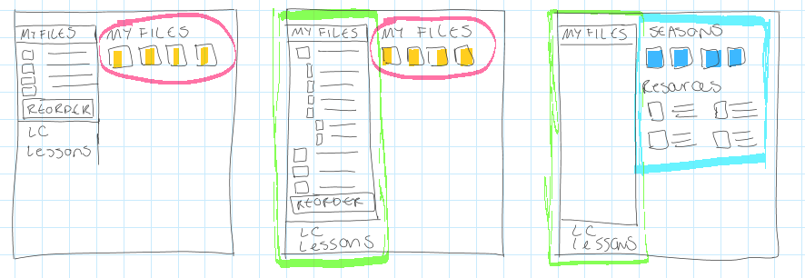
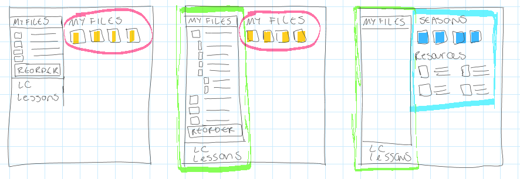
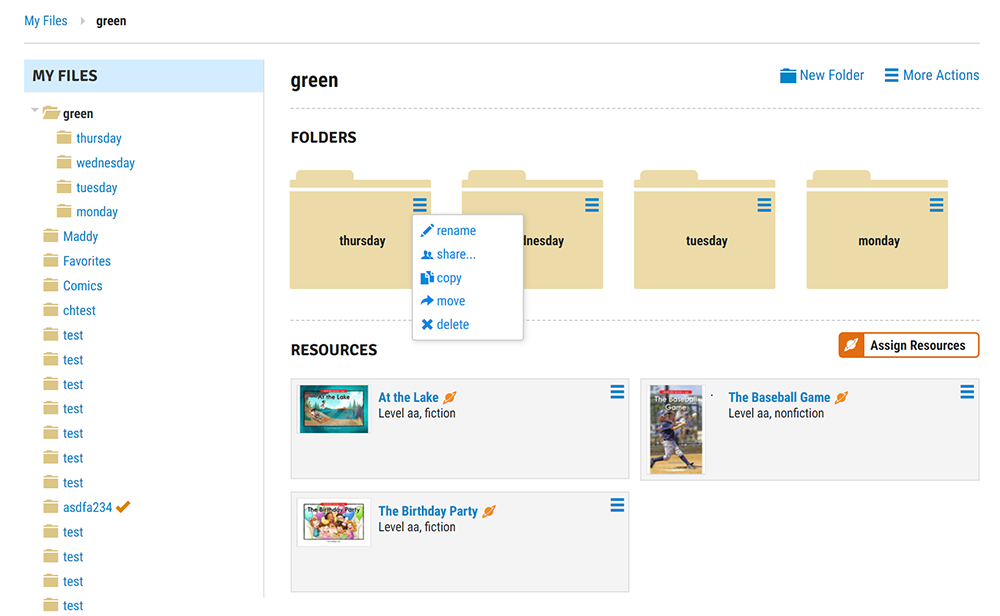
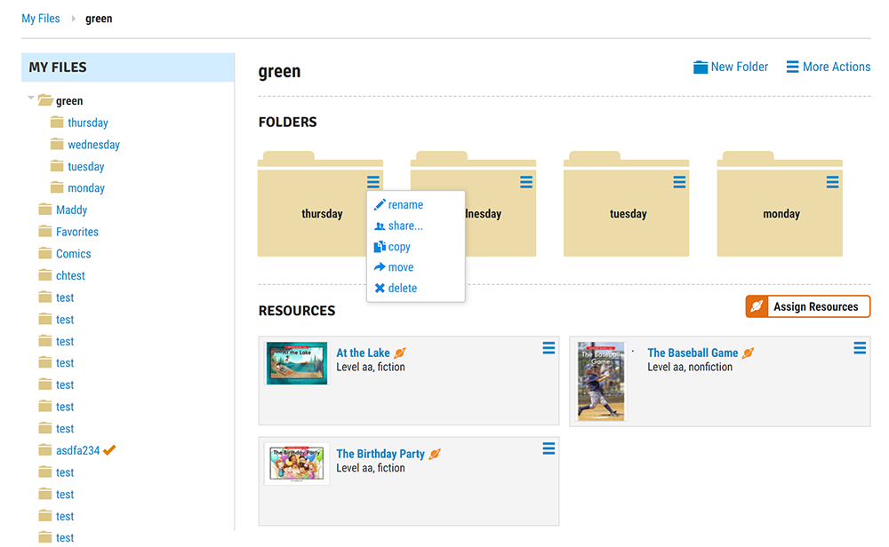

UX Design, HTML/CSS, Angular integration
File Cabinet and Custom Assignments
Learning A-Z
Problem
On the Learning A-Z family of sites, teachers can save resources they like inside of a File Cabinet for future use, and create assignments for students to complete online.
I was asked to redesign the File Cabinet and plan feature enhancements for sharing and assigning.
Problem
On the Learning A-Z family of sites, teachers can save resources they like inside of a File Cabinet for future use, and create assignments for students to complete online.
I was asked to redesign the File Cabinet and plan feature enhancements for sharing and assigning.
Understand
Initially, the File Cabinet and Assignments were presented to me as separate projects. But I sensed a lot of overlap between the two projects, so I wrote out a simple hand-drawn diagram to think this through.

I suggested one unified project to allow teachers to collect, organize, and the project moved forward in this way.
The described process of finding something, assigning it now, or saving it for later sounded a lot like a shopping cart and wishlist experience, so I did some more diagramming again to think this through.
+
After demonstrating the strong correlation, shopping cart experiences became a big source of reference and inspiration for the assigning process.
User Flow
Before moving further, I needed to evaluate the interfaces and interactions required for this project. I sketched out some informal user flow charts to help think this through.


4 main parts of the project emerged:
- File Cabinet
- File Cabinet Preview
- Assignment Process
- Assignment Management
Design & Iterate
File Cabinet
The File Cabinet was designed with well-established patterns of digital file management in mind, while also prioritizing simplicity.
 

 
File Cabinet Preview
After plenty of brainstorming and research, this was the first approach for the shopping cart-inspired process for saving resources:

After tt was determined that more emphasis needed to be put on building a collection and assigning it right now, rather than saving it for later, the next version included an "Add To..." button rather than a "Save" button, and the dropdown evolved into a ribbon, allowing teachers to actively see their collection being built.
Assignment Process
An interface for assigning individual resources already existed, but this needed to be expanded to include assigning entire folders:
Assignment Management
To track assignments, a new page needed to be designed. After more ideation and research, I got to work putting mockups together.
All Together

Development
The project had evolved into a large complex one, and it seemed to change every day as new requirements and feedback came to light. I began to document each mockup and requirement in a shared document to keep everyone on the same page. This evolved into a 50+ page document used by design, engineering, and management to communicate and track changes and completion of features. This was accompanied by user flow diagrams and prototypes.

Outcome
In the end, teachers were able to assign groups of resources with just a few clicks, easily view those collections in the File Cabinet, and monitor progress on the Assignments page, so the project was considered a success. However, there was still much work to be done to tie these features together which was out of the scope of this project. But many steps were taken in the right direction, resulting in a more useful experience for teachers.
Reflection
Throughout the project, as feature changes got out of control, effort was made to understand exactly what the priority was - what problem were we trying to solve? Did we want it to be easy for teachers to plan lessons, or to save their favorites? Did we want to optimize the experience for resource detail pages, or category pages? Did we want to focus on ease of use, or advanced lesson planning? Elementary teachers, or reading specialists? As the saying goes, if you design for everyone, you design for no one. Never have I felt the truth of that saying more than while working on this project. But there was a lot to be proud of, and a lot learned about UX, development, and project management, and the need to advocate for design-centric thinking.